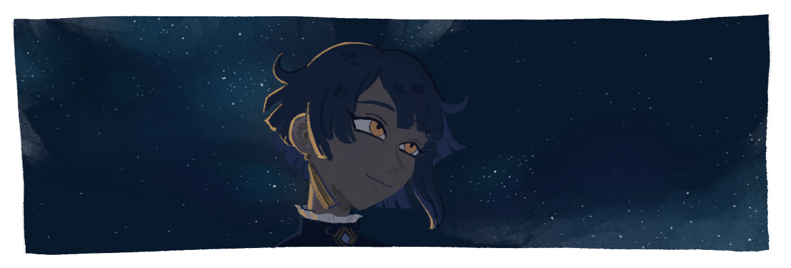
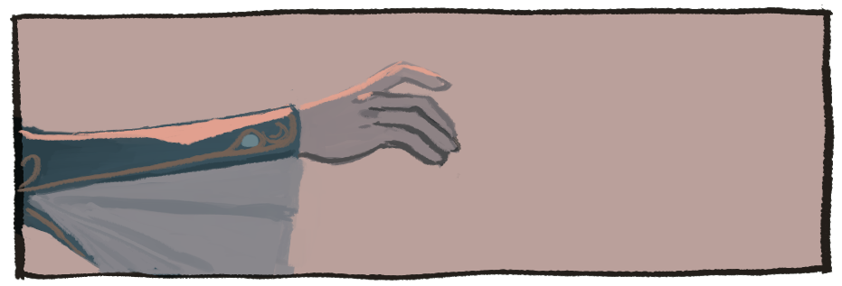
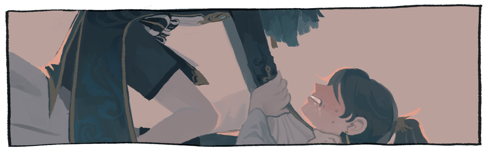
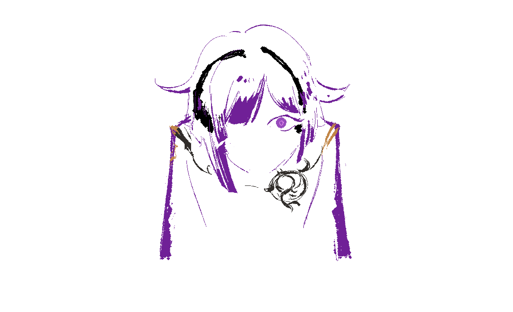

In retrospect, it probably starts on that moonless summer night, when Xingqiu’s nighttime jaunt brings him under the shadow of a red mountain. Under the shadow of this red mountain, he feels a strange meaning on the wind that stirs him to lift his head, and at that moment, his gaze falls upon the fleeting figure of a yaksha flying through the clouds.
Liyue legends say it is fortune to gaze upon an adeptus in one’s lifetime, but Xingqiu is rather inured to the sight after seeing Adeptus Xiao at Hu Tao’s funeral parlor every other week. Still, that faint silhouette glowing jade-like under the distant starlight stays with him for hours after, and even when he closes his eyes to sleep, he can still feel the chill of the mountain air sinking into his bones.
For a long time, though, Xingqiu is convinced it all starts when he wakes up one morning filled with the burning desire to perform a live reading of his novel in Liyue Harbor’s most public square.
It’s not uncommon for such an urge to besiege him from time to time — surely, the people of Liyue would realize what a stunning literary masterpiece he has created if they would simply hear it out! — so he ignores it and continues about his life as usual. There’s nothing strange about it, or so he thinks, up until the urge persists for the fifth morning in a row.
“This is getting ridiculous,” he says to the ceiling. Perhaps he should convince his best friend to reread his novel so he can bask in the attention once more. Chongyun is always diligent and sincere in what he does, so surely the care he’d give to the task will be enough to satisfy Xingqiu’s vanity.
“How many times has this been, now?” Chongyun says, when Xingqiu presents him with the novel with a winsome smile over lunch.
“Literature is an endless wealth of insights, meant to be unearthed nine times over,” Xingqiu says gravely. “And besides, I’ve made some edits!” He hasn’t. “Who else can I count on for such honest, thoughtful feedback?”
“I still have my thaumaturgic studies today, you know…”
“You can train in my garden again,” Xingqiu offers. “And then we can read together afterwards. Don’t you think that’s the perfect afternoon schedule?”
Chongyun sighs, but he’s already reaching to take the manuscript from Xingqiu’s hands. This is why Chongyun is the best.
Xingqiu brings some business papers to look over while Chongyun finishes his meditation and daily exercises. When they’re both done, Chongyun sits down under the tree by the pond, and Xingqiu lays his head in his lap and watches him read. Chongyun’s eyes are focused; his fingers brush lightly along the page, and he silently mouths the words to himself as he reads, diligent as with his thaumaturgic texts. Really, it shouldn’t be so interesting to watch him read, but it’s so entrancing anyhow.
Xingqiu never understood why people found bird watching so interesting — really, it’s just birds doing the same thing over and over, how can that possibly hold anyone’s attention for more than a few minutes? — until he realized how much satisfaction it brought him to witness Chongyun’s mundane acts of living. The faint smiles, the fluttering of the eyelashes, the way his emotions tend to come out through his body language even when he doesn’t know how to express it himself. Chongyun is just so interesting, and Xingqiu doesn’t even know why.
He listens to the whispers of leaves around them and the singing of birds, the rustling of pages gently turned, and closes his eyes.
⚬
⚬
⚬
He stands at the edge of shadow and looks out across the land. The layered clouds above should have diffused the moonlight until the shadows were soft, but instead, the border ahead of him is sharp and clear.
It would only take a single step to emerge into the light. He doesn’t want to. Isn’t it more comfortable in the shadow of the mountain, where he can stay hidden in the dark?
But for some reason, gripped from within by something hollow, like a puppet—
He steps forward. The light burns when it touches his skin, like alcohol sliding down the throat.
His chest feels cold, a hollow torn open. It hurts. It wants out. He takes a deep breath—
⚬
⚬
⚬
“Xingqiu, wake up. I’ve finished reading and you’ve put my leg to sleep.”
Xingqiu jolts awake with a gasp. His heart pounds loudly in his ears. The summer heat is nearly unbearable, but the phantom ache of cold still lingers. He reaches up to touch his chest. It feels like it should hurt to breathe, but it doesn’t.
“Xingqiu?”
“Are you okay?”
Xingqiu takes a deep breath before smiling. “I’m okay. You just woke me up from a strange dream.” It had felt so real. The chill, the fear, the burning light—
“Oh.” Chongyun blinks slowly and leans back. “Should I have let you keep sleeping?”
“Not at all,” Xingqiu says earnestly, pushing all thoughts of dreams aside in favor of sprawling on top of Chongyun. There are far more important things to attend to than a strange dream. “I want to hear all about what you thought!”
Chongyun pushes him to the side. “Hey, it’s too hot to be this close.”
“But Yunyun, I’m so cold,” Xingqiu pouts. “Won’t you warm me up?”
The weird part is, he does feel cold, a coughing ache in his chest that doesn’t want to go away. Not in the physical way, or any way that would do something to offset the stickiness that comes with the summer heat, but in the vivid imaginary sensation of a phantom conjured by the mind. Snuggling closer to Chongyun, however, seems to dissipate the sensation — if only because focusing on Chongyun occupies far more of his attention than a phantom feeling.
Chongyun just sighs and stops trying to push him off, which is a clear victory. Instead, he takes out one of his special qingxin and mist corolla popsicles and says,“I’ll just use this to calm my yang physique if it acts up, then.”
“We should have some of your popsicles’ ingredients stored away. You can take them before you go,” Xingqiu says generously, since he won’t stand for Chongyun suffering a net loss on his account.
“If you insist,” says Chongyun, turning his head away a little. They used to argue about it back when Xingqiu first started giving him things, but luckily Xingqiu has since badgered him into accepting them through the power of persistence and asking what is so unsatisfactory about his gifts. Chongyun hasn’t had much to say about accepting things from Xingqiu since then, although he still seems embarrassed about it sometimes. “And anyways, about your manuscript…”
Xingqiu perks up. “What did you think?”
[fill this part in later]
“I feel like every time I read your story, I notice something new.” Chongyun’s expression softens into the not-smile that he does. “In that manner, it’s a little bit like you…”
“A story reflects the author who told it as much as the audience that receives it,” Xingqiu says pretentiously. “So does that mean you’re always noticing something new about me?”
“Yes, because you’re always full of surprises,” Chongyun says, poking him in the forehead. “But I like that part of you too.”
“Compliments will get you everywhere with me,” Xingqiu says, mock-preening, and laughs when Chongyun lightheartedly shoves him off.
Frustratingly enough, he wakes up the next morning to find that the urge to inflict his novel upon everyone around him has returned with a vengeance. “What is wrong with me these days?” he mutters as he buttons up his coat in the mirror. Maybe spending more time with Chongyun would help… but he already imposed quite a bit yesterday, and if he goes now he just knows he’ll be badgering Chongyun about reading his book again. No, he should choose a different friend… Yes, perhaps Hu Tao will do the job.
Satisfied, he heads out for the morning to do his duties as the second heir of the Feiyun Commerce Guild. The guild is currently negotiating a large deal with a fine silks trading company from Inazuma, and as the overseer of the guild’s silk trade, it falls under Xingqiu’s responsibility.
“Come, Xu,” he calls as he heads out the door. “We have some inspections to complete today.”
“It’s good to see the young master handling his tasks so efficiently,” Xu says as he follows Xingqiu out. “It is getting quite busy — I’m afraid we don’t have much time for your disappearances…”
“Yes, yes, I know how to prioritize what needs to be done,” Xingqiu waves him off. “Alright. Have you prepared the documents that I asked for last time?”
Xingqiu spends the rest of the working hours of the day with the owner of the Nagaoka Trading Company, Nagaoka Tetsu. He has already allowed the Feiyun Commerce Guild a preliminary inspection of his wares. Today, they’re finalizing the last steps before signing the contract: providing proof of their transportation capability, and negotiating the initial safety deposit and investment values.
And all of that wrapped under layers of indirect, implication-filled polite speech and decorum, of course… how aggravating. Xingqiu has learned to bear with it, but for some reason, it feels so much more irritating today. By the time he gets home, he feels like he’s about to burst, and takes dinner alone in his room so he doesn’t say anything snippy to his family.
This doesn’t stop them from finding him, however. A series of rapid knocks barely warns Xingqiu before his older brother, Xingxia, opens the door.
“How many times have I told you to knock first?” Xingqiu complains.
“I did this time, though?”
“You’re supposed to wait before I say it’s okay to come in!”
“But you’d say it’s okay, wouldn’t you?”
“You’re the one who said you wouldn’t come into my room without permission anymore.”
Xingxia coughs. “Ahem. Yes. Well, I knew you were inside, so let’s just get to the point, shall we? Congratulations on successfully closing the deal today. We’ll be holding a banquet with the Nagaoka Trading Company next week to celebrate, so don’t forget to commission new clothes for the occasion.”
“Understood,” says Xingqiu. And then, for some reason, “I know what to do already, ge. I do this as much as you do.” More, even. If only he could count on his brother to handle these things better…
“I suppose that’s true… You know how I lecture too much.” Xingxia sighs. “I won’t bother you any longer, then — you’ve had a long day. Get some rest!”
He wouldn’t have such long days if Xingxia was any good as an heir—
The door swings shut, and Xingqiu jolts, closing his mouth on the scathing sentence resting at the tip of his tongue. What was that? This is his duty to the family, and besides, it’s hardly unusual to work longer when business opportunities come along. Is he so tired that he’ll feel this resentful over a single long day at work?
No, it must just be a strange mood. Maybe from that dream. Hopefully some time spent with friends will cure him of that soon.
The next day, after ascertaining that all the really important matters are taken care of, Xingqiu sneaks out the window and heads to Wangsheng Funeral Parlor to find Hu Tao.
Much to his disappointment, though, she isn’t there. “Don’t tell me she’s found a new marketing tactic to try out?” Xingqiu asks. It would be funny if she did, but it would be quite sad if she didn’t consult him first. He has so many ideas he’d love to see her try!
Undertaker Meng shakes his head. “I’m afraid she’s not here in Liyue Harbor at the moment. After speaking to our honored guest, she left for Wuwang Hill.”
Honored guest? — Ah yes, that’s how Hu Tao’s employees discretely refer to Xiao. Then she has adepti matters to attend to… How serious. Better not pry, then. “Do you know when she’ll be done?”
“You know how she is,” Meng says with a sigh. “She’ll return whenever she returns, I suppose.”
True… how sad. For this to happen at this juncture when he’s just managed to sneak away from his duties, too. But Meng glances at him and adds, “You could always go to keep her company, though, as long as you don’t ask too many questions…”
Xingqiu starts to shake his head. He wouldn’t want to get in the way of Hu Tao’s duties, after all. Except…
It’ll be good to get away from Liyue Harbor for a bit, right? And Wuwang Hill has always had unique scenery; it would make an excellent change of pace. The mist-filled hills and glowing soul-lights seem rather appealing after suffering the summer heat. And worst case scenario, if Hu Tao chases him off, he can just relax in Qingce Village with a nice novel before returning home.
Xingqiu nods firmly; that seems like an excellent idea. “Thank you, Meng. I’ll be sure to tell Hu Tao how helpful you were when I see her.”
He pretends not to hear Meng mutter, “Wait, please don’t,” as he trots out the door. Good deeds should not go unrewarded, after all!
Xingqiu arrives at Wuwang Hill half a day later. He tracks Hu Tao’s trail to a gloomy, shadowed nook among the hills. However, the trail stutters in broken fragments before disappearing here entirely. What to do from here?
A ghostly breath on his ear, and a low voice. “Boo!”
Ah, there she is. “Hu Tao, how nice to see you again.”
“Aw, you’re no fun.” The funeral director materializes before him in a burst of golden butterflies of light. “You should at least pretend to be scared, Master Xingqiu.”
Xingqiu laughs. “I heard from Undertaker Meng that you were here on some business, and I was rather bored, so I decided to come along. I don’t suppose I’d be getting in your way?”
Hu Tao tilts her head and puts her hands on her hips, evaluating Xingqiu for a moment. “Hmm, well, let’s see… You seem healthy enough. Come along, then. But don’t ask any questions, and don’t look too hard at anything strange. Got it, mister?”
“Of course. How excellent; I’m in need of a nice walk through the woods.”
Xingqiu, having long mastered the art of walking and reading at the same time, follows Hu Tao with a book in hand. The air is refreshing, the story immersive, and the quiet company of a friend relaxing. Hu Tao occasionally disappears and occasionally converses with thin air. In the shrouded darkness of the woods, it all feels so timeless, as if they are detached from the rest of the world, part of some larger mystery. Xingqiu even puts down his book a few times just to enjoy the feeling. The only thing he would complain about, however, is the fact that when the wind blows it feels much too cold.
And then, after some time has passed, Hu Tao reappears one last time, pursing her lips as she walks over to Xingqiu.
“Have you concluded your business?” Xingqiu asks, lowering the pages of his novel.
She clicks her tongue. “There’s only so much I can do,” she says, which doesn’t really answer the question. “Sigh, we’ll just have to go for today! Not every venture will result in success.”
“And yet, I’m sure that the director of Wangsheng Funeral Parlor will surely find a way,” Xingqiu teases, snapping his book shut and putting it away. “Shall we head back, then?”
“Hehe. Allow me to escort the young master back under the light of day.”
Hu Tao does exactly as she says, stopping when the gloom of Wuwang Hill clears away to reveal the setting sun. “I still have some business matters to attend to here,” she says with a smile. “But young master Xingqiu ought to depart from this place soon. Don’t come back here for a while, or soon you’ll have a yin constitution to match Chongyun’s yang physique!”
“Hoh?” Now that is interesting. “What do you mean by that?”
“Tsk, tsk. Accumulate any more yin energy and you’ll soon be mistaken for a ghost.” Hu Tao leans in to peer at his face. “Have you been hiding many secrets lately, Xingqiu? Feeling intensely? Disguising your emotions or true intentions? Indulging too much in fantasies or other contemplation?”
Xingqiu laughs. That’s a silly question. “Why, Hu Tao, it’s as though you hardly know me. How could you accuse me of such a thing?”
Hu Tao shrugs and bounces back on her heels with a smile. “Aiya, that’s true. Young master Xingqiu has always had a more yin nature than most. Well then, be careful while you let that yin energy dispel itself. Perhaps Chongyun can help you out? Hehe.”
“What an excellent idea.” More excuses to spend time with his friend instead of attending to those stuffy business affairs. “My thanks to the Wangsheng Funeral Parlor Director for her impeccable service and illuminating words of wisdom.”
“Yes, yes, a wise attitude from my most favored customer. And what shall you give me in return for my favor?”
“I will, of course, give you a signed copy of my debut novel — I am a rather famous author, I’ll have you know.”
They nod at each other solemnly for a moment before bursting into laughter. “Really, though, give it a read sometime,” Xingqiu says. “I’m afraid I’ve bothered Chongyun about it too much, and now I must set sights on another victim.”
“It will have to wait until I’ve completed my business.” Hu Tao sighs dramatically. “It’s quite a troublesome matter this time, let me tell you! Better escape before it catches you too!”
Xingqiu bids her farewell and parts ways with her there. He tries not to feel disappointed about her deferral; it must be an important task that has brought her to Wuwang Hill, after all. But all the same, he can’t help but darkly think that his book has been published for months now — what if this is just an excuse, and she has no interest in his creation at all? In the reflection of him that can be found in his work?Does she even care about what he’s made, if it serves no purpose to her?
…Perhaps the ghostly aura of Wuwang Hill has affected him too much, if he is thinking so negatively; best to put this thought to the side and move on.
Still, his mood sours, and by the time he gets home, he feels more foul than ever — his escape doesn’t seem to have helped at all.
⚬
⚬
⚬
Hidden in the shadow of the red mountain, Xingqiu backs away from the edge of light. It’s colder here, but it’s far preferable to being burned.
Now that that’s been established, it’s time to move on to the next order of business, which is, namely, looking around the place. He looks up at the craggy rocks and the way the shadows catch in their crevices, at the moonlight that glows through the clouds like illuminated jade. Hasn’t he been here before? Yes, that road near Jueyun Karst, upon which his occasional meandering often stumbles into scoundrels and evildoers alike. It’s become his new favorite place to excurse to, when he has the opportunity; but somehow, tonight, it feels… so…
Something is watching him.
He doesn’t know how he knows it, but he feels the truth of it in his bones. The darkness of the cave is endless: an ancient malice that would do anything just to swallow him whole. Without meaning to, Xingqiu takes a step away, towards the light.
But something is waiting for him.
In a daze, Xingqiu watches as his foot stops, then reverses direction, and carries him forward into the dark mouth.
One step, and then another.
The cold air burns in his lungs.
There is no light here. No sound. A suffocating nothingness, too big and too small all at once, impossible to know the dimensions of this space surrounding him, to even be certain that there is still stable ground before him. He is a passenger in his own body, can do nothing but wait with dread for each step to land… Will there be ground here this time? Or this time? Or this? … He cannot even feel forward with his hands…
The only thing he can do is hope.
Not trust?
How can you trust what you cannot perceive for yourself…—
Coldness bursts in his chest like a thing shattered. The body seizes and gasps, and misses the next step, and keeps missing.
He falls.
And still he can see nothing, hear nothing, feel nothing to anchor him to his surroundings. Not even a reflection. He won’t even see his death coming. Hit the ground, and he’ll just be gone. Lost forever — and no one to even know it—
—he can’t die like this—
—at the least, someone has to see—!
SPLASH.
Coughing and spluttering, Xingqiu surfaces from the water. It’s too cold. His chest is aching with it again, painful as a bloom of frost. Where is warmth? Where is fire? He starts to pull himself to his feet, when he looks down and sees—
⚬
⚬
⚬
Xingqiu wakes with a start, drenched in sweat and heart pounding. He feels too hot and too cold at the same time, as if he’s just come down with fever.
What a strange and unsettling dream. It felt so… so vivid.
Wouldn’t this make for great material for a story? He should write it down.
He spends the next twenty minutes scribbling notes about it at his desk before Xu knocks on the door and he’s forced to put his pen down. Business can’t wait, after all. As they leave, Xingqiu asks Xu to feel his forehead to check for any fever. “You seem fine, my liege,” Xu replies. “Although your temperature is on the cooler side. Perhaps you could put on a longer pair of pants to keep warm—”
“No.”
“Suit yourself,” Xu says with a sigh, and Xingqiu heads off to the Feiyun Commerce Guild feeling smug that years of bull-headed refusals to budge on his fashion choices have worn everyone down into accepting it.
With the Nagaoka banquet coming up in three days, Xingqiu and his family are kept busy running about and making preparations. He doesn’t have a chance to bother Chongyun at all, and only sees him once over the next few days when they run into each other at Wanmin Restaurant during dinner. Naturally, Xingqiu pulls Chongyun over to enjoy the meal with him, even as Xu sighs and moves to sit at a different table. How thoughtful of him to give them some privacy.
“You look a bit tired,” Chongyun says, peering across the table at Xingqiu. “Is the guild keeping you busy again?”
How disappointing! He thought he had been concealing it fine, and yet Chongyun has noticed it at first glance. “No more than to be expected. If I seem more exhausted than usual, you may thank Wuwang Hill for it — Hu Tao tells me I’ve accumulated quite a bit of yin energy.”
Chongyun tilts his head thoughtfully and nods. “Your yin energies are stronger than they normally are.”
“Do I have very much normally?”
“Yin represents concealment, imagination, hidden aspects, passiveness, and darkness, among other things,” Chongyun says. “You’re a tricky person, Xingqiu… You spend a lot of time immersing yourself in novels, and you even like to manipulate events from the shadows. Broadly speaking, your personality lends itself to yin tendencies, but most of the time you have a proactive enough personality to balance that out.”
So one’s personality can influence their balance of yin and yang energy. How interesting, but then again, does that mean…?
Xingqiu’s chopsticks clink a little too hard against the plate.
“Yunyun… don’t tell me you passively indulge in others’ antics as a method to counterbalance your yang constitution?”
“It helps,” Chongyun admits, scooping up another mouthful of cold noodles. He looks out thoughtfully. “Choosing to go with the flow lowers the chance of getting agitated and stirring up my yang energy. I still have things I pursue, of course, but I do have to choose where and when to be proactive and when to be more passive.”
Xingqiu nods. He eats some more of the Jueyun Chili Chicken before him without tasting any of it. What if…? No, don’t ask, it’s too embarrassing, and since when has he doubted their friendship this way? But there’s a cold feeling in his chest that just won’t go away, so hollow he could just burst with it, and a minute later he ends up blurting out anyway, “Chongyun, you don’t just go along with me because you can’t be bothered to do otherwise… right?”
“What? Of course not!” Chongyun takes a deep breath. “I — I guess I’m not the most proactive between us, but… it’s still my choice to be in your company, right…? I’m sorry if I made you feel otherwise.” He bows his head slightly.
The cold ache eases up a little at that. “No, no, you’re fine. I was just… beset by a moment of insecurity, I suppose.” It’s not like him to have these kinds of thoughts, or to blurt them out so easily, either. He’s troubled Chongyun this time. “I like what we have. I just wanted to be sure you were happy with it too.”
“I am.” Chongyun hesitates, then adds, “We should go out on another day trip, when you have time.”
A transparent and unnecessary attempt at extending an olive branch, but not one that is unwelcome. “That would be nice,” Xingqiu admits. Between Chongyun’s traveling schedule for exorcisms, and Xingqiu’s guild affairs and tendency to wander off, they don’t often cross paths without purposefully creating time for it. And Xingqiu has been quite busy recently…
It’s a good thing he has time to make time for Chongyun.
“I should be free after the banquet at the end of the week.”
“That’s great. Well… I’d like to gather some thaumaturgical materials at Cuijue slope — would you care to accompany me?”
“I would love to.”
“Let us have a toast to our new business venture!”
The banquet isn’t much different from any other banquet he’s had to attend over the years.
“A toast to our future success!”
Clinking glasses, smiling faces, compliments flowing as freely as wine, although who knows how sincerely they are really meant.
“I must commend you for raising such a fine son — his business acumen is surely unparalleled among his peers.”
Although he doesn’t care much for such boring affairs, he has still managed them for years. He should be used to everything that comes with these business matters. So why…
“Haha, I can take no credit for that, I’m afraid. Xingqiu has always been incredibly bright. It won’t be long before he surpasses his old man.”
...does he feel so frustrated today?
“You flatter me too much. Where would I be without Father laying the foundation for me?” He smiles, raises his glass towards his father and Tetsu, and takes a sip. The alcohol blooms with warmth as it goes down, but not enough to chase away the coldness in his chest.
His father laughs. Tetsu also smiles, saying, “Indeed, the accumulation of the family’s efforts together helps everyone go further than if the burden was shouldered alone. Perhaps I ought to bring my son along next time. If I do, I hope that young master Xingqiu will look after him as well as he has helped me.”
There it is, his true purpose. Xingqiu smiles. All these obsequious compliments, just to come to this? It’s disgusting. No one says what they mean. Shouldn’t they have to pay a price for that? Doesn’t that make sense? It would only be right. “Business should be kept separate from personal interest, don’t you think?” he laughs, hiding his smile behind his glass of wine. “Although, perhaps I could be persuaded…”
His father turns sharply towards him. “Xingqiu!”
Tetsu waves it off easily. A businessman to the core… how utterly repulsive. “If the young master has any wishes I can fulfill, please say it.”
Xingqiu suppresses the urge to curl his lips. Why would he express himself so obviously? “You may have heard that I have a little interest in literature, but I’m afraid I’ve quite exhausted Wanwen Bookstore’s most recent stock… Perhaps Master Tetsu could recommend some reading from Inazuma for me?”
His father stares. Tetsu laughs. “Such a simple thing? You truly are as scholarly as the rumors say. That is no trouble at all — I can even lend you some books from my collection.”
“I’ll look forward to it. I have been meaning to expand my tastes past Liyue.”
Tetsu nods. “Although, there is one other book I might recommend. It was written by a native of Liyue, in fact, and has become quite popular in Inazuma.”
“Oh?”
Tetsu smiles.
“Have you heard of ‘A Legend of Sword’?”
Has he heard of—
Of—
“It’s a story of a hero skilled in martial arts, pursuing justice with the power of his sword. I found it quite interesting, myself — so imagine my surprise when I found out that almost no one in Liyue had heard of it! How strange.”
His story… has reached others…?
Xingqiu has no idea how he keeps his expression the same. He ignores his suddenly dry throat, carefully puts down his goblet so he can be sure he won’t drop it. “It sounds interesting,” he says. He smiles. “I wonder… what were your favorite aspects of it?”
“Hmm.” Tetsu strokes his chin. “In many ways, it is a tribute to Liyue’s classic tales of martial heroes. However, what truly arrested me was the protagonist’s relationship to being ‘witnessed.’”
“Witnessed…?”
“Indeed. He conducted his many good deeds in secret, such that no one could trace it back to him. But how can anyone bear to be without someone to know them? Whether one will be hated or loved, people still yearn to be recognized for who they are. The protagonist of this story… Even he cannot escape that desire. As for how he chose to fulfill it, I will leave it to you to find out.” Tetsu chuckles as he looks at Xingqiu’s father. “Perhaps old foxes such as we could learn a thing or two from this story.”
His father nods, looking at Xingqiu thoughtfully. “Perhaps,” he says solemnly, “I will have to give it a closer read.”
Xingqiu clenches his fists under the table. If this is what convinces his father to take a look, then—
—then what? Why didn’t he care before? Does the value of what Xingqiu does have to be reflected in someone else’s eyes before he’ll give Xingqiu’s interests a second glance?Wasn’t it like this with the Guhua Clan’s arts, too, how he tried to tell Xingqiu that he wouldn’t be able to reconstruct the secret arts, and that it’d be better to spend his energy on more productive things? He shouldn’t be happy, he should be frustrated, and disappointed, and angry. Yes, angry at everyone who has turned away from the deep waters—
…
What… in the world is he thinking?
His father and Tetsu continue to chat without him, which he’s grateful for, because all of a sudden he feels quite cold and tired, and he wants to be anywhere but here. No more facades tonight. It must be the facades that are getting to him; that, and the pretending — if he could just get away for a few days, then he wouldn’t feel so resentful anymore. Yes. Him and Chongyun, just the two of them. He doesn’t have to pretend around Chongyun, and Chongyun has always accepted everything he’s shown. If he leaves with Chongyun now, then surely this unhappiness will fade.
He slips away from the banquet early while Tetsu and his father are distracted discussing the Chasm’s impact on future ore prices and escapes to his room, intending to pack a bag for the night, only to find that Chongyun is already there.
Chongyun is sleeping in the chair by the desk, head resting on the broadsword he’s hugging to the side. It looks like he dozed off while waiting for him. Aha, how silly. If he was here, he should have simply come to the banquet itself. They could have danced together.
Except no, they couldn’t have, because all of those pesky etiquette rules would have gotten in the way. Chongyun wouldn’t know anything about what order to speak to the guests in, or how long, or the double meanings and implied intentions that no one will take responsibility for. Chongyun wouldn’t know how to pretend. He only knows how to suppress.And it’s better that way, anyways — who would want to become part of such a boring thing? No, Chongyun should stay the way he is forever: straightforward, direct in his indirectness, without all those disgusting hidden sides—
Xingqiu doesn’t realize his hand has touched Chongyun’s until it begins to burn. He jerks back. When did he reach out? Looking down, the skin on his fingers is slightly red, as if he ran them under hot water. Xingqiu pokes Chongyun’s face tentatively, but this time, it doesn’t hurt. That’s weird. Was it all in his head? He pokes again. Still nothing.
Well, it can’t hurt to check once more, hehe…
But Chongyun’s gloved hand comes up to push Xingqiu’s arm aside. He lifts his head, eyes still bleary with sleep. “Xing’er, knock it off, I’m awake now,” he mumbles, straightening up. Then he squints. “...It’s not even the ninth hour yet, and you’ve already snuck away? You really must be stressed.”
Still with that freakishly accurate internal clock. “Don’t say that. I was just too excited for our camping trip! If you’re here then you must have gotten ready to run off with me tonight, right?” He clasps his hands together with a winsome smile. Chongyun just looks at him deadpan.
“It’s true, but whenever you talk like that it makes me feel like I’m about to walk into one of your traps again.”
“How mean! I’d never do that to my camping partner right before we go out.”
“Should I look out for myself once we arrive then?”
Xingqiu snickers before moving to the closet and pulling out the bag and sword he prepared earlier. “Anyways, let’s go, Chongyun! If I have to stay another minute in this stuffy and boring place, I think I’ll melt and die.”
“This ‘stuffy and boring place’ is your own family’s compound, you know,” Chongyun mutters, but he still opens up the bedroom window for them to jump out.
The night air is refreshing after the heat of the banquet inside, and Xingqiu can’t help but raise his head to the sky with a smile. “Come on, this way,” he says, hopping onto the windowsill and pulling himself up to the roof. Chongyun follows a moment later with his pack and greatsword strapped to his back. Despite the weight, his footsteps don’t make a sound. What an excellent partner in sneaking around — although, next time, they’ll really have to do something about all that bright white he wears.
They jump across the rooftops and shimmy down a nearby sandbearer tree to escape to the streets of Liyue Harbor. Xingqiu’s snuck out countless times before, of course, in pursuit of his little jaunts, but it still feels fresh and exciting every single time, even more so with someone by his side. By the time they’ve left the outskirts of the city, Xingqiu finds himself smiling — not uncontrollably, he could control it if he really wanted to, but he doesn’t. He already does so on a daily basis for the guild; why toss away the opportunity to feel as freely as this?
“Where to, Chongyun?”
Chongyun gestures up the mountains. “We can still travel along the roads for another hour more. It’ll reduce the chances of your family finding us, that way. I know of a good place to camp for the night off the side of the road, and then we’ll head to Cuijue Slope in the morning.”
“It’s great to have such a dependable travel companion as you,” Xingqiu laughs, slinging an arm around Chongyun’s shoulders. “You’ve got it all planned out, don’t you?”
Chongyun nods. “It’s important to make proper preparations when traveling, after all.”
“I’ll rely on you this time then,” Xingqiu says solemnly, and then sighs as they set off. “Aiya, it would be nice if I could rely on everyone around me the same way…”
“Do you not have any reliable helpers at the guild…?”
Xingqiu purses his lips. “It’s different. I’m in charge of some slightly significant matters so there aren’t many I can consult, and Father’s usually busy so I’d rather not disturb him if I can. And as for my older brother…” He thinks of the workload he takes on to smooth things out for Xingxia at the guild. But then he thinks of Xingxia’s easy smiles, the way he lives so boisterously, the lectures he gives and the way he cares. It’s not that it isn’t troublesome, but… it’s still better if Xingxia remains that way, isn’t it? “Nevermind. I shan’t dwell on such unimportant matters. Besides, I still have you, Yunyun. How could I be unsatisfied with that?”
He laughs, but Chongyun doesn’t. Instead, Chongyun furrows his brows slightly and says, “Xingqiu, do you feel cold?”
“I—” What a non-sequitur. “I suppose I do?”
“It’s a warm summer night. You shouldn’t…” Chongyun hesitates. “Your yin energy has increased. I’m worried about you.”
That does seem to be a problem. Now that he thinks about it, he really shouldn’t be feeling this cold, should he? “What does Liyue Harbor’s most capable exorcist recommend?”
“You know I’m not to that level yet,” Chongyun retorts, but continues. “I told you before that there are many yin aspects to your personality, right? The tendency to keep secrets, feel deeply, and hide away your true thoughts… all of these things will feed your yin energy, and I don’t think it’s a good idea to let your yin energy grow past this point.”
“What would happen if I did?” Xingqiu asks curiously.
“Well, for one, you might become more prone to sickness and your body might weaken. How would you carry out any crusades for justice like that?”
“Oh, well, now that is serious.”
“It would be best to increase your yang energy somehow. Exercise, staying in sunny and well-lit areas, and eating ‘heaty’ foods would help. But personality-wise…” Chongyun glances askance at Xingqiu. “It might be asking too much of you, but directness, confrontation, and expressing how you feel would definitely help counterbalance all the yin energy you’ve accumulated.”
“That sounds awful,” says Xingqiu. Being straightforward? And about what he feels? That’s the sort of thing he’d only want to do if he was on the verge of death, or perhaps having an appropriately impressive moment of introspection during a hero’s journey. Not something he’d do in daily life!
“But it would help,” Chongyun says, raising his voice. “So that’s why… Um…” His voice becomes quieter, and he avoids looking at Xingqiu directly, the way he does sometimes. “That’s why I think… if you’re angry at your brother, it’s okay to say it.”
Xingqiu stares. That whole lead up… was it all to say this?
In the silence, Chongyun takes a deep breath. “I — I know I’m not the most… discerning about matters close to the heart, but still, I wanted to say…”
He meets Xingqiu’s eyes.
“Xingqiu, you don’t have to tell me everything. But you can tell me anything. Whatever you have to say, or whatever you don’t, I’ll listen to it all.”
“Is that… okay?” Chongyun says.
Xingqiu snaps out of his daze. “Of course that’s okay, Chongyun. I was just — surprised. It’s not often you talk about your feelings so sincerely.”
Chongyun shrugs, pulling out one of his popsicles. “With my condition, it’s better to avoid doing so, most of the time… But it should be okay this time, I think.” He gestures vaguely towards the nighttime sky with the popsicle, and Xingqiu feels a vague pang of sadness, because it just isn’t fair that Chongyun has such trouble with his constitution that he even has to calculate when it’s safe to comfort a friend.
Compared to that, isn’t it lucky that Xingqiu can choose what he wants to express?
“You look upset,” Chongyun says hesitantly, lowering his popsicle.
Xingqiu immediately pulls his expression into a cheerful smile, but when he feels a cold chill run through him, he stops. It seems like he really will have to heed Chongyun’s advice on this.
“I just wish you could express yourself more freely.”
Chongyun squints slightly at him. “Xingqiu, you’re not feeling sorry for me, are you? I could say the same about you.”
“Me?”
“For your duties at the guild. You have to pretend all day, and it’s not even the kind of pretending you like to do.”
Yes, that’s right… the entire reason why he wanted to escape in the first place. But right now, that all feels as distant as the nighttime lights of Liyue Harbor reflecting upon the sea. Chongyun’s statement doesn’t bring up any bitterness or resentment; instead, Xingqiu feels a sudden aching melancholy — here in the stars, in the sea wind blowing through his hair, in the space between himself and his best friend, so close and yet interminably far. Both of them putting on their facades, not out of dishonesty, but out of a desire to be better, to do better… and they both know it, and they move around it, don’t they? But times like this, it makes it so difficult to get to the heart… yet here is Chongyun, still reaching out in his own way, still trying…
Xingqiu looks at Chongyun, and sees him looking back.
“...Hey, Yunyun, you said I should try being honest about what I’m feeling, to counter all this pesky yin energy… right?”
He thinks he feels sad, somehow, but happy, too, to have Chongyun standing beside him. But most of all, he feels…

“Right now, I feel very lucky to have a friend who cares as much as you.”
By the time they’ve gathered all of Chongyun’s needed materials and headed back to the harbor, the sun is slowly settling once more over the waves. “It seems I’ll have to return to my guild duties soon enough,” Xingqiu sighs, gazing at the street lanterns slowly lighting up for the night. “Still, I had the most enjoyable time with you, Chongyun… Shall we have a meal together to end the day?”
Chongyun nods. “Of course. I’d like to alchemize some of these materials first, though; I’ll meet you at Wanmin Restaurant when I’m done.”
“Oh? You’re not afraid I’ll order something strange for you?”
Chongyun sighs. “As long as it’s not heaty… Keep it simple for me, will you?”
Xingqiu laughs and leaves Chongyun behind at the alchemy table. Hmm, what should they eat today? As he approaches Wanmin Restaurant, he’s hit with the familiar smell of spices and the sound of a girl’s laughter over a sizzling wok. Ah, excellent, it seems Xiangling is back. He’ll have to ask for a recommendation.
“Welcome, dear customer!” Xiangling turns her head from the stove as soon as he sets foot through the entrance. “Oh, it’s you, Xingqiu! It’s been a while, hasn’t it?”
“Don’t worry, I’ve patroned the restaurant plenty even during your absence,” Xingqiu says with a smile. “It’s wonderful to see you again, Xiangling. How have your culinary adventures been?”
“It’s been great! I’ve been enjoying myself in Mondstadt lately — there’s lots to learn there about how they prepare their meat, and of course, their wine. But I’ve been most interested in cooking with cryo regisvines. They’ve got a fantastic crisp to them, as long as you’re careful of the cold!”
Now that is promising. “That sounds fascinating. I don’t suppose you have any experimental dishes you’d like to test?”
“Oh, would you really?” Xiangling smiles brilliantly. “I’ve got a hoarfrost slime pudding recipe just waiting to be perfected!”
“Of course. Chongyun and I” — that is to say, Chongyun — “have to try something new every once in a while, after all. But as for the main dishes, we’ll be having the usual.”
“No problem! Go ahead and take a seat — I’ll have your dishes prepared in a jiffy!”
Xingqiu chooses seats outside the restaurant so the heat inside won’t trigger Chongyun’s yang physique. Even if it’s a hot summer night, there’s still some measure of wind out here to help cool them off. And while he waits for Chongyun and the food to arrive, he might as well take out the latest novel he’s been reading. Time to find out what happens next!
He’s only immersed himself in the story for a short while before someone shakes his shoulder, pulling him out of it. Pursing his lips, he lowers the book and looks up, only to be met with his older brother’s stern expression.
“Bai Xingqiu,” says Xingxia with a sunny smile, “where in the world have you been?”
Xingxia must be quite incensed if he’s pulling out the full name. “What’s wrong, brother? Did something go terribly pear-shaped while I was gone?”
“We had to send off Master Nagaoka without you this afternoon. Imagine our surprise when you were nowhere to be found.”
“You hardly need me for that,” Xingqiu wheedles. “I already took care of everything important, didn’t I?”
“And if the guest of honor asks for you by name? Hmm?” Xingxia shakes him by the shoulder emphatically. “He picked out books for you from his private collection aboard the ship, and you weren’t even there to receive it. Left without so much as a goodbye! You’re lucky he didn’t take any offense. Come on now — Father’s still waiting for you back at home.”
Xingqiu doesn’t budge when Xingxia tries to pull him out of the seat. “Sorry, brother, but I’m afraid I’ve already promised to treat Chongyun to a meal here. Convey my sincere apologies to Father, will you?”
Xingxia lets go of him with a frown. “Chongyun again? The guards mentioned he visited last night. Don’t tell me he’s the reason you decided to run off this time?”
“Not at all. I merely decided to accompany him on a little thaumaturgical expedition.”
“While we still had business to attend to? Xingqiu, there’s nothing wrong with spending time with your friends, but you can’t let that detract from your responsibilities. If Chongyun was the one who encouraged you to disappear on us—”
“If he was, then what?” Xingqiu says sharply, grip tightening on the spine of his book. “You’ll disapprove? Ban him from entering the compound?” He won’t accept that, not when Chongyun had come visiting for his sake.
Xingxia stares before running a hand through his hair with a sharp sigh. “Nothing so extreme, Xingqiu, don’t make me out to be the bad guy, here. I just want you to be more responsible. You can’t just gallivant off the way you did as a child anymore. If you let yourself be lax with skipping duties, then what will happen if you develop a habit? What if things don’t work out next time? And more importantly, what if something happened to you while you were missing? Father and I might never know what happened to you.”
Xingqiu lowers his head behind the pages of his book. It’s not that Xingxia doesn’t have a point, but truly, what is the point of living if he only ever does what is wise? But that’s too much to try explaining, especially here and now, so he only says, “You know I can protect myself.”
“A Vision doesn’t make you invulnerable, Xingqiu.”
Flash of anger, quickly suppressed. It’s reasonable that he’d assume that was what Xingqiu meant, even though it wasn’t what he meant at all. If Xingxia really cared, he’d know that. “Not my Vision — you know I hardly use it. The Guhua Arts.”
“The Guhua Arts are hardly infallible either. You shouldn’t get overconfident. It’s good that you strengthen your body with martial arts practice, but—”
Thunk.
Xingxia looks in surprise at the book that Xingqiu put down with just a little too much force.
“What do you know about martial arts? You don’t practice any yourself.” His chest feels stuffy.“You don’t even watch my practice.”
“...Well, I suppose it’s true that the head of the Guhua clan has nothing but praise for you, but…” Xingxia runs a hand through his hair. He looks troubled. He should be. “Have I made you feel neglected? I’m sorry. I’ll come along next time.”
Here is where Xingqiu should accept the offer and reconcile.
But why should he?
“Forget it.”
Even if he showed his passions to Xingxia, there’s no reason Xingxia would approve, or even understand.
“It was my fault this time. I’ll apologize to Father when I return home. I’ll pen a letter of apology to Mr. Nagaoka as well… Although, I suppose Xu will have to write it for me to ensure it’s legible.”
He doesn’t need Xingxia to understand a thing, anyways.
“Xingqiu, don’t be difficult, I’m trying to apologize… I’m sorry for lecturing you so much, alright?”
“I said I’d apologize,” says Xingqiu sharply. “You got what you wanted, so leave me alone already.”
“Come on, Xingqiu… How did I upset you? I can’t make amends if you don’t tell me….”
“...Do you want to listen or not? Make up your mind already…!”
Xingxia blinks and takes a step back. “Xingqiu?”
“You and Father don’t get it at all… If I like reading, it’s good, unless I do it all day, and then it’s bad. If I decide to learn martial arts, it’s good for me to get out of the house, until I devote myself to it seriously, and then you don’t approve of how much time I commit to it…” He feels cold. He feels furious. “And then I successfully comprehended the secret arts, and that was great, wasn’t it, except you can’t have me prioritizing martial arts over the merchant path — so all you do is criticize—”
“That’s not what—”
“And I keep it to myself because it’s not what you or Father care about — but you can’t be happy with that either—”
“I’m just worried about you, Xingqiu!”
“You’re worried about the damage I’ll do to the family if I ever try to be myself!”
Blood roars in his ears, and he can’t hear a thing.
“You don’t even know who I am…!”

Xingxia is speaking. His mouth flaps up and down, up and down. Hands up, placating. Calm down, he says. Let’s talk this out, he says. Come on, Xingqiu, please.
Who cares.

Fingernails scratch his wrists. Xingxia’s mouth, still flapping. Always talking and talking and talking, but when does he ever listen?
Why is Xingqiu the one who always has to think of others?
“You haven’t ever…”
“...even read my story.”
If his brother refuses to understand—
“Xingqiu!”
—then he can just go die.
“Xingqiu, wake up!”
⚬
⚬
⚬
In all the stories that Xingqiu has read — and he has read many — this is the sort of part where the protagonist should wake up with a pounding headache, a dry mouth, dizziness, confusion, or a feeling akin to a hangover. When Xingqiu opens his eyes, though, he doesn’t even feel tired. He just feels serene, like a deep pool of clear mountain water, and maybe a little bit cold.
He sits up from his bed and looks around. The door to his room is firmly shut, plastered neatly with nine paper talismans arranged into three trigrams. Shimmering red powder forms geometric trails over the polished wooden floorboards around his bed. And to the side…
Once again, Chongyun is dozing off in the chair by the desk, greatsword by his side. A few unfamiliar books are spread out on the desk, darkened by lines upon lines of densely-packed words that make space for the occasional thaumaturgic diagram. Xingqiu gets out of bed to take a closer look and promptly falls over with a thud.
The first thing Xingqiu does is think, Huh, why do I feel so weak?
The second thing he does is look up. He looks up because Chongyun has leapt to his feet and lifted his greatsword with a shout. Glowing blue seals of thaumaturgic energy condense into being along the arc drawn by his swinging arm. And that expression. He doesn’t smile or grimace or snarl, but there’s a fierce and wild anger in his eyes that Xingqiu has never seen on him before. The flickering firelight warps it with stark shadows. The glowing seals distort the outline. For a moment, he thinks, Chongyun looks like the yaksha of old — an avenger, a vanquisher, a demon more than demons bearing down with a mask of righteous and helpless fury, and all the more furious for its inability to change a thing.
Xingqiu flinches. The moment passes. The greatsword embeds itself into the floorboards inches away from Xingqiu, and the firelight illuminates Chongyun’s pale lashes as he widens his eyes.
“...Xingqiu?”
Xingqiu opens his mouth to say something cool, or witty, or at least thematically and dramatically appropriate for the moment. But looking at Chongyun’s expression, he can’t think of anything to say except for a soft, “Hello.”
Chongyun sits down next to him, very heavily, on the floor.
“Thank the gods,” he says in a thick voice. “I was so…”
He breaks off and turns his head away slightly, closing his eyes and taking deliberately even breaths the way he does when he feels overwhelmed. It’s fun usually to have such a clear indicator of when he’s gotten a reaction out of Chongyun, but this time, it just makes him feel terribly sad. He reaches out and takes Chongyun’s hand.
“I’m alright now, Yunyun. Look, I’m awake and feeling perfectly fine now, no doubt thanks to your tender ministrations, right? A bit of rest and I’ll be back on my feet…”
Chongyun grips his hand back, so hard it almost hurts.
“You’ve been possessed.”
“I did figure it was something of that sort,” says Xingqiu. “But you took care of it just now, didn’t you?”
Chongyun looks fairly miserable at that. “No,” he says. “I tried exorcising it properly, but it was too strong. The best I could do was suppress it until… until you were back in control.”
Xingqiu takes that in very calmly, and thinks, It’s too bad there’s no one here to admire how calmly I’m taking this. He should remember this feeling and write it down in his next book.
“Do you know what the thing possessing me is?” he asks, since that seems like the most important piece of information here.
Chongyun shakes his head. “A curse formed from a powerful resentment, I believe… but other than that, I have no clues. Your family and I put our heads together but we couldn’t make heads or tails of it since, well, you’ve been behaving quite normally, really…”
He gives Xingqiu a questioning look, but Xingqiu can only spread his hands helplessly. “I suppose I have been a bit irritable lately,” he says, “but I believed that it was merely because I’ve been feeling the most pressing need to make everyone read my book.”
“Your book?” Chongyun looks rather baffled. “What kind of curse makes you want to share your book?”
“I don’t know,” says Xingqiu. “I already want to do that on my own.”
They look at each other in perfect, puzzled silence.
“Maybe it’s a curse that amplifies all your emotions,” Chongyun says eventually. “I’ve read about similar cases in my clan’s library.”
“That seems like a good start. Did they mention any solutions?”
Chongyun looks away. Deep breath in, deep breath out. “...Nothing I haven’t already tried.”
A curse strong enough to resist Chongyun’s natural physique, and the exorcisms he’s practiced diligently for years on top of that…?
Xingqiu shakes away the apprehension before it can coalesce into a well-formed thought. There will be a solution. There always is, in the stories, at least the ones that don’t end in tragedy. And Xingqiu has no intention of starring in a tragedy. He thumps Chongyun cheerily on the back and ignores the surprised “Hwah?” expelled from Chongyun’s mouth. “Don’t look so down, Yunyun!” he says. “Look on the bright side! Didn’t I always say we’d find you a spirit to exorcise? Now you can practice all you want!”
Chongyun’s expression crumples, and Xingqiu immediately knows that he fucked up.
Between Xingqiu’s slightly flustered attempts at comfort and Chongyun’s years of emotional self-discipline, it only takes a few minutes for Chongyun to calm himself down, at which point Chongyun tells Xingqiu that his family wants to see him.
That is one conversation Xingqiu is not looking forward to.
His father doesn’t seem to know what to say to him. He asks how Xingqiu is feeling, tells Xingqiu not to worry about the guild’s matters, and promises that they’ll find a way to help Xingqiu. After that, though, it lapses into a stilted silence.
Xingxia, at the side, clears his throat.
“Father,” he says, “I’d like to talk with Xingqiu alone.”
Their father looks between the two of them carefully before nodding and rising out of the seat.
“Don’t forget. The two of you are brothers. Our family will support each other no matter what.”
With that, he departs from the room, leaving Xingqiu and his brother to look at each other in the silence left behind.
“About yesterday—” begins Xingqiu.
“I just wanted to say—” Xingxia starts.
They both stop. “You first,” says Xingqiu, since that seems like the least he can do after trying to strangle his brother to death.
“Right. Um.” Xingxia grimaces. “I just wanted to know… your exorcist friend said that… Oh, stars. How much do you remember?”
Xingqiu mirrors Xingxia’s expression. Unfortunately… “All of it.”
“Ah. And… Well… how much did you mean?”
That’s a tricky question. Xingqiu would hate to answer it even under normal circumstances.
“Have you ever had a dream of doing something you’d never do while awake?” he says instead. “Hitting someone you become angry at, screaming out your feelings, laughing or crying in public, knocking over the table at a banquet?”
“Well, sure,” says Xingxia, “but what’s wrong with laughing in public?”
“Laughing loudly,” Xingqiu says. “People look at you.”
Xingxia makes an expression at Xingqiu. He tends to make this expression when he thinks Xingqiu has said something quite strange but has no idea how to tell Xingqiu in a way that doesn’t sound completely insulting. The sight of it cheers Xingqiu up immensely.
“That’s what it feels like to me now,” he says. “Like it was all a dream. Some other me, who said and felt and did things that he meant, and that I don’t. I mean… if I was going to express my dissatisfaction about anything at home, I have a thousand other far more creative and harmlessly annoying ways to do it.”
“It sounds like you’ve thought about expressing something before, then.”
Xingqiu nods. “I thought about printing subtly altered versions of your tea tins’ labels to embed a numeric cipher in the borders, and then switching all the labels around so you’d have to manually check your tins one by one.”
“You what?”
“Or hiring famed legal advisor Yanfei to administer an official notice of my decision to take a six week vacation. You know, little things like that.”
“Brother, just hearing this makes me concerned for how much you may have kept pent up…”
“I wouldn’t actually do any of that,” says Xingqiu. “Or. I wouldn’t, if I was in control. So…”
He grimaces.
“I’m sorry about… about all of that. Even if it was induced by an outside influence. I know you only want the best for me and the family.”
Xingxia looks at him for a long moment, then sighs and runs a hand through his hair.
“I’m sorry too, Xingqiu. You’re so independent and self-assured that I suppose I forgot to pay attention to your feelings…I only looked at the surface of what you showed.”
“Well,” says Xingqiu a bit uncomfortably, “that was the purpose of it. Making other people believe what I showed, I mean.”
“Still,” Xingxia insists. “I feel as though I’ve failed you as an older brother. I should’ve tried to support your interests more.”
Xingqiu can feel how troublesome this is going to be already. “Don’t think about it so much, Xingxia. Things are fine as they are! What are you going to do, watch my daily practices and ask what I’ve been reading lately?”
He laughs. Xingxia doesn’t. He frowns and says, “Are we really so distant as a family, that I cannot do even this?”
What? “That’s not it. It’s just… unnecessary. You already know me better than almost anyone! I need at least a few secrets for principles’ sake.”
Xingxia furrows his eyebrows.
“But when you were possessed, you sounded so… upset. At the least, I should read your book…”
“No way,” says Xingqiu immediately. “That’s too embarrassing.”
“Hasn’t Chongyun seen it, though?”
“Yes, but — but he’s Chongyun.”
Xingxia gives Xingqiu a knowing look. “Is there something you want to tell me, perhaps? A reason why you’ve seen fit to rendez-vous with him so often?”
And that look is so infuriating. What does Xingxia think he knows about Chongyun that Xingqiu doesn’t?! “Only that I wouldn’t do so if business at the guild wasn’t so boring.”
“To all those other merchants’ children who are struggling to learn the trade, those words would make them cry, don’t you think?”
“That’s why I don’t say it to them! Keep up, Xingxia.”
Xingxia sighs once more, but at least he’s smiling a little bit, now. “Alright, alright. I won’t bother you about any of this any further. But really, Xingqiu… If you are unhappy, please say so. What is the purpose of all the work we do, if we cannot live a happy life? Father and I will do our best to fulfill any requests you have.”
“I know,” says Xingqiu with a smile. And after Xingxia closes the door behind him, he repeats to himself, quieter this time, “I know.”
They try a few more exorcisms, after that. Candles made of different materials, altering the chants, layering different thaumaturgic formations together. Xingqiu’s job is mostly to sit in the middle of a room while Chongyun meticulously draws on the floor. He watches the process with interest at first, and then gets bored and starts reading. Eventually, though, he returns to his hobby of Chongyun-watching.
“Is looking at me really so interesting?” says Chongyun, sitting back on his heels. His gloves are dusty with chalk.
“There isn’t much else to look at in here,” Xingqiu replies, which isn’t an answer, although Chongyun takes it as one and moves on.
“This is the last one to try,” he says. “If this doesn’t work…”
The corner of his mouth turns down slightly before he closes his eyes and lets out a steady breath. When he opens his eyes again, they are calm.
“We’ll journey back to consult with my clan,” he says. “They are more experienced than I am. Even if I fail to help you, I can at least escort you to my home.”
“Of course,” says Xingqiu. “I have utmost faith that my dearest friend will find a way.”
Chongyun does his exorcism. Xingqiu feels a mild ticklish warmth like a thread of sunlight, but the sensation soon goes away.
“How is it?” Xingqiu asks.
Chongyun inspects Xingqiu closely. His eyes glow with a strange shine, and in response, Xingqiu feels a sudden, chilling cold. He knows the answer before Chongyun even shakes his head.
“I’m sorry, Xingqiu.”
“What do you have to be sorry about? Without you, I’m afraid I would be dealing with a much more serious state of affairs.”
“Still,” says Chongyun. “It’s my duty as an exorcist to expel all curses and evil… but I haven’t been able to do a thing.”
“Do all exorcists succeed on their first try? I’m sure you just need more practice and you’ll be fine. No need to be discouraged so easily.”
Chongyun seems a little doubtful at that, but he doesn’t argue, which is a victory. Instead, he reaches into his pocket and places something in Xingqiu’s hands.
It’s a small figure carved from cor lapis in the shape of a bi xie. It glows from within and is warm to the touch, as if containing a small flame.
“I made a yang-energy talisman from what we gathered at Cuijue Slope,” he says. “It can absorb nearby yang energy and ward off evil. I hope… I mean, I’m sure it will help suppress your curse until we reach my clan compound.”
Xingqiu turns the figure around in his hand. “Don’t tell me, did you plan to make this for me from the beginning?”
Chongyun clears his throat. “Well, I thought — it might be useful. For dealing with excess yin energy.”
Xingqiu laughs. “With this around, do I even need to worry about my yin energy anymore?”
He means it in jest, but Chongyun responds, as he always does, with utmost sincerity. “You do. The more yin energy that gathers, the stronger the curse will grow; it is imperative that we suppress it as much as possible. Before we set off, here is what you need to keep in mind…”
They depart the next morning by horse after discussing what to do with Xingqiu’s father. He insisted that Xingqiu bring Xu and a few hired guards, saying, “You know how often merchant caravans are waylaid by unfortunate encounters in the wild; we cannot afford to let this trip go wrong.” He tries to send more, in fact, until Chongyun takes the hint from Xingqiu kicking his ankles and explains that bringing too many guards will only slow them down, especially when trying to travel through the wild near his clan’s lands.
Xingqiu’s family sends them off at the gates of Liyue Harbor. When Xingqiu looks back, he can still see them watching his departure solemnly, at least until the distance blurs them into smudges of nothing.
As they travel, Chongyun re-emphasizes the importance of suppressing his yin energy as much as possible. According to Chongyun, that means:
No eating cold foods or rations. No cold water. Everything must be prepared hot.
Xingqiu is to avoid the shade as much as possible, and he should stay under the sun as much as he can bear.
Xingqiu needs to express himself straightforwardly as much as he can tolerate. “A high order for you, I think,” Chongyun said, “but do your best, okay?”
Xingqiu is under no circumstances to remove the paper seals that Chongyun pinned to his hair and clothes before letting him out of the thaumaturgic formations set up around the house.
They must absolutely not use their Visions.
In the sweltering heat of the summer sun, abiding by these instructions is nearly unbearable.
“I’m going to melt, Yunyun,” he says, dramatically throwing himself down in the grass where they’ve stopped for their lunchtime meal. “You cannot be so cruel as to make me drink hot soup in this weather.”
“It doesn’t have to be boiling hot,” says Chongyun sympathetically as he stirs the pot over the fire. “But it should be a little higher than body temperature, at least.” A merciless devil!
“I’ll die of heat stroke before this curse can even do anything to me.”
“If it’s so hot, you could always take off your coat.”
Xingqiu rolls over to give Chongyun a betrayed look. “But I look so good in it.”
“I know.”
“I had it custom tailored. I even helped with the design.”
“I know, Xingqiu.”
“Then you know what a travesty it would be to take it off,” says Xingqiu dramatically. “This was meant to be shown off! But I’m sure it wouldn’t hurt if you would just use your Vision to make a teeny, tiny bit of ice water.”
“Ice is the most extreme yin of all the elements,” says Chongyun. “No.”
At least Chongyun considerately chose a hilltop with plenty of wind, which is enough to provide Xingqiu with some relief from the heat.
As they travel, Xingqiu isn’t ashamed to admit that he stays in the shade as long as he can get away with. It is way too hot to deal with the sun today. Chongyun, however, seems to be keeping a meticulous clock in his head, because he periodically pulls Xingqiu out of the shade and never lets him stay for too long. If the shadow of some hill covers a large part of the road, then Chongyun makes Xingqiu eat some Jueyun Chili and scallion pancake as they go along.
It’s downright stifling. But under Chongyun’s careful, insistent attention, Xingqiu starts to notice how strictly Chongyun manages himself, too. He keeps one hand on the reins and uses the other to hold his parasol, angling it so the shade covers all his bare skin, and he stays in the shade as much as he can manage. He eats his popsicles when there’s a long stretch of shady road so that he can avoid the sun even without his parasol. And sure, perhaps Chongyun doesn’t have to worry about overheating the way Xingqiu does now; but what about in the winter?
It is with a newfound appreciation for Chongyun’s discipline, and the many restrictions he labors under, that Xingqiu ends the day.
They set up camp at a location that Chongyun finds suitably antithetical to yin energies: a grassy hilltop lacking anything in defense except for its steep height. Xu protests, saying it would be difficult to flee the area if an incident occurred, and Chongyun agrees, but then says, “The highest priority to me right now is ensuring Xingqiu’s curse won’t worsen as we travel. As for protection, we’ll be relying on you and the guards to do your part.”
Xu seems to find it difficult to protest after that.
Xingqiu sits on a rock and watches Chongyun set up their tent. After a while, he says, “Say, Chongyun, do you really think having so much yin energy would be a bad thing?”
“I think I have told you a few times in great detail what I think of the matter,” Chongyun retorts rather dryly.
“Yes, but think about it… if I have too much yin energy, and you have too much yang energy, then all we’d need to do is stick together and then it would all balance out.”
“If it balanced out, I wouldn’t need my popsicles and you wouldn’t need to stay by a campfire in the middle of summer,” says Chongyun, yanking at the ropes of the tent just a little too hard. “Although I suppose with you around, we might mask each other well enough that I won’t scare off every ghost I try to find.”
Xingqiu looks at Chongyun expectantly. Chongyun’s movements grind to a halt.
“Don’t you think it would be worth it to delay exorcising this curse until you’ve met another ghost or two?” Xingqiu prompts.
Chongyun shakes his head rapidly as if trying to get rid of an unwanted thought. “A curse this powerful shouldn’t be trifled with.”
“I’ve been fine all day, haven’t I?”
“That’s what you thought too before you tried to kill your brother.”
The fire crackles. The wind blows. To the side, the guards murmur in quiet conversation between themselves.
“Sorry,” says Chongyun, lowering his head. “Was that… insensitive?”
“A little, but it was still a sorely needed reminder.” Xingqiu sighs. “It’s just a shame… I would have liked for something positive to come out of all this.”
Chongyun finishes staking the tent into place. He sits down next to Xingqiu.
“If you’re looking for something positive,” he says, “I’m happy that this has given us the opportunity to travel together once again.”
He’s woken in the night by shouting and the clash of steel upon steel. He gropes about for his sword — there’s an empty space where Chongyun should’ve been sleeping — and closes his hand around the hilt.
Emerging from the tent, he finds the camp invaded by Treasure Hoarders. Worse, they seem to be targeting the supplies, even as Chongyun and the guards are doing their best to fight them off… Ah. Chongyun’s expensive thaumaturgic materials. Not to mention, they’re a small group traveling light, and with obviously high quality horses and goods… no wonder they presented an appealing target.
He’s about to enter the fray when Chongyun spots him and shakes his head frantically. For a moment, Xingqiu doesn’t understand — until Chongyun deflects a potioneer’s concoction away from him, and the potion explodes into white frost all over the ground.
“Stay away from them,” Chongyun warns. “Nighttime is the worst time for you to come in contact with something so cold!”
“Is that why you’re not using your Vision?” Xingqiu demands.
“Worry about yourself!”
Xingqiu clenches his jaw. If only he had a pyro or electro Vision instead; then Chongyun wouldn’t prohibit him from using it. He throws himself into the skirmish — away from the potioneers, just as Chongyun asked.
It should have been fine, except as the fight goes on, Xingqiu starts to feel cold. A bone-deep cold that permeates every part of him… He retreats towards the fire, but it’s already been put out by a Treasure Hoarder’s hydro potion. And they’ll hardly give him enough time to light a fire in the middle of battle, will they?
Looks like he’ll have to defeat them before he runs out of time.
His sudden aggression seems to take the Treasure Hoarders by surprise. He scatters them like a fox among pigeons, sword flashing in crescent arcs under the moon, and knocks unconscious one of their pugilists before they can muster a proper counterattack. Good. They’re full of openings; now is the perfect time to press the advantage and use his—
—his Vision, which he isn’t supposed to use.
The momentary lapse in concentration and falter in his sword is enough for a Treasure Hoarder to swing his shovel and knock him to the ground. The seal that Chongyun had pinned in his hair comes fluttering down.
The kick catches him in the side and knocks the breath out of him. He rolls across the dirt and doesn’t get up. It’s so dark, and so cold. So, so cold.
“Quick, while he’s down,” a muffled voice, far away.
“Look at his clothes — isn’t he the most important one here—?”
“Use him as hostage—”
Someone tries to pry the sword out of his hand. He tightens his grip.
“What the — he’s freezing!”
“Isn’t that just because of the potions? Hurry up—”
An angry yell. Someone he knows…
Chongyun. What’s wrong? Who upset him? Xingqiu won’t let this go. He pries his eyes open and gazes at the bleary shapes in the dark, lifts his sword hand…
“Xingqiu, no!”
Swords of rain condense before him, and Xingqiu—
⚬
⚬
⚬
LET ME OUT
LISTEN TO ME—

⚬
⚬
⚬
—Xingqiu screams.
Dimly, he’s aware of bodies being flung back, of shrieks and yells and flesh breaking against the ground. He can barely hear it over the flooding water, see it through the inky wave. He can feel all the water hidden beneath the earth, and it hurts, and all the hidden water heeds the call.
The earth rumbles. The water gathers to him.
Humans stumble and fall beneath him, staring up in wonder and horror and fear.
Humans, with all their hidden sides.
Humans, who can’t accept them.
Humans, who did this to himherusme
They should all die.
Just die.
Just die!
Your fault! Your fault! Your fault!
Why did you blame meherusme
“Xingqiu!”
Look. This one is afraid, too. He’ll reject youus, blame youus, run away from youus, just like all the rest—
“Are you okay?!”
…What? That’s what he…
He shethey floats lower. The memories come clearer now. This one accepted himthem for
everything they were.
This one
didn’t turn himthem
away.
Then
is it possible…
“Please, please don’t—!”
A hand grasps onto hishertheir wrist. It burns. Xingqiu screams and pulls away.
“You’re hurting me…!”
Chongyun’s eyes widen. His grip loosens. Xingqiu yanks his hand back, and the water comes flooding in again.
“Wait…!”
The last thing he sees before the water swallows him is Chongyun reaching desperately for a hand that has already pulled away.